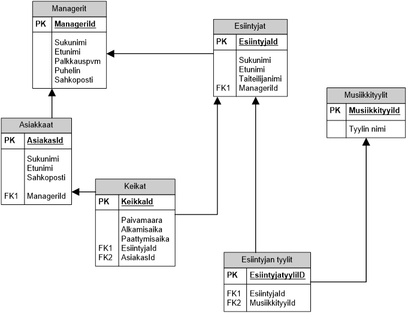

2. SQL-harjoitus
Seuraavista tehtävistä suurin osa perustuu oheiseen tietokantaan. Kirjoita vastaukset MS Word-asiakirjaan tai tekstitiedostoon, numeroi tehtävät. Lähetä vastauksesi sähköpostin liitteenä minulle.

- Millaisella Create-komennolla saat luotua Managerit-taulukon? Mieti järkevät MySQL:n mukaiset kenttätyypit. Huom.! Kaikki kentät ovat pakollisia.
- Millaisella Create-lauseella saat luotua Esiintyjat-taulukon? Huom.! viiteavain
- Millaisella ALTER-komennolla saat muutettua jo luodun Musiikkityylit-taulukon Tyylin nimi -kentän tyypin (alunperin text 9, mutta pitäisi olla varchar 20)?
- Millaisella ALTER-komennolla saat lisättyä jo luotuun Asiakkaat-taulukkoon puhelinnumerokentän?
- Tee kysely, jonka tuloksena saat selville, kuinka monta keikkaa kultakin esiintyjältä on talletettu tietokantaan. Vastauksessa pitää näkyä esiintyjän taiteilijanimi.
- Tee kysely, joka hakee kaikki tänä vuonna tehdyt keikat. Vastauksessa pitää näkyä esiintyjän taiteilijanimi ja asiakkaan nimitiedot. Tulokset pitäisi olla keikkapäivän mukaisessa nousevassa järjestyksessä.
- Millaisella SQL-komennolla saat
- tyhjennettyä Managerit-taulukon?
- Entäpä tuhottua koko taulukon?
- Mitä seuraava komento saa aikaan?
SELECT Postitoimipaikka, COUNT(*)
FROM Ihmiset
WHERE Postitoimipaikka in (‘Tampere’, ‘Turku’, ‘Helsinki’)
GROUP BY Postitoimipaikka
HAVING COUNT(*)> 2
- Mitä ihmettä seuraava suoraan netistä kaapattu SQL-lause mahtaa tehdä? Kerro se selkeällä suomenkielisellä virkkeellä.
SELECT ENimi, SNimi, Ika
FROM Ihmiset
WHERE ENimi LIKE '%a%' AND (NOT SNimi='Kallela' OR Ika<30)
OR Ika BETWEEN 40 AND 50
AND ENimi IN ('Kalle','Simo','Ville','Tiina','Minna')
AND NOT (Ika=15 AND ENimi IN ('August','Kustaa')
OR Ika BETWEEN 10 AND 13);
- Mitä oheinen SQL-lauseke saa aikaan. Mieti erityisesti, mikä merkitys on DISTINCT-määreellä.
SELECT DISTINCT Asiakkaat.Nimi
FROM Asiakkaat INNER JOIN Myynnit
ON Asiakkaat.AsiakasID = Myynnit.Asiakas;
- Selvitäpä netin avulla, miten LEFT JOIN ja RIGHT JOIN eroavat meille jo tutusta INNER JOINISTA. Tee molemmista kuvaava esimerkki käyttäen yllä olevaa tietokantaa ja vaikkapa sen taulukoita Asiakkaat ja Managerit.
- Mitä phpmyadminin tuottamassa SELECT-lauseessa komento LIMIT saa aikaan?
- Mitä tekee CONCAT-funktio? Anna myös esimerkki.